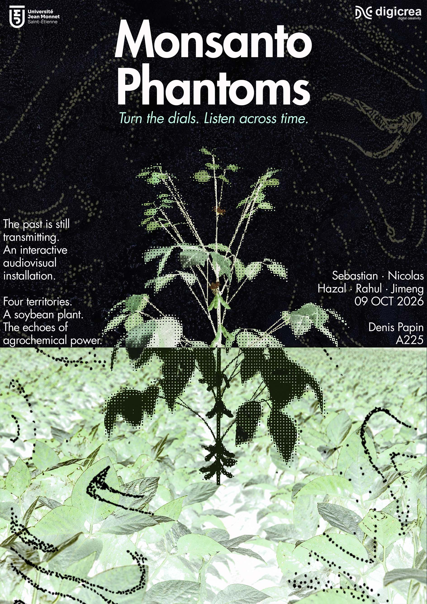
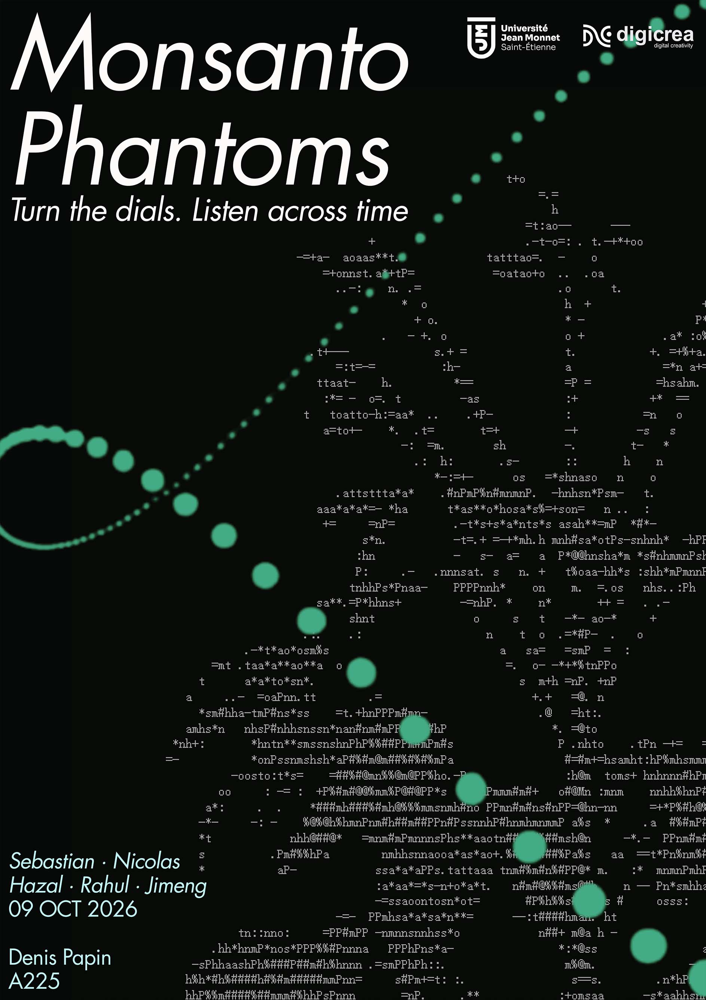

MONSANTO PHANTOMS
ABOUT THE PROJECT
An audiovisual installation that makes the sound of monoculture visible. A 3D model of Roundup Ready (RR) soy, generated procedurally with L-systems in TouchDesigner, reacts in real time to a sound archive recorded across the four largest soy plantations in the Americas: Argentina, Brazil, Bolivia, and Paraguay.
As post-1996 acoustic frequencies reach the virtual organism, the plant structure deforms, its particles scatter, and the system bursts into flames, translating ecological disruption into reactive visual and physical feedback.


